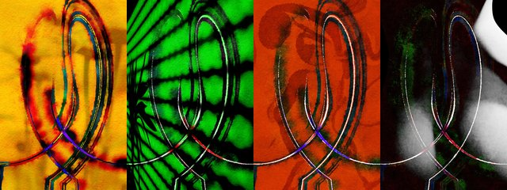

by Hulki Okan Tabak · Async Art Master #2578 · four-phase · time rule: UTC
Updates four times a day to reflect sunrise / day / sunset / night cycles.

Sunrise 06:00–06:59 · Day 07:00–17:59 · Sunset 18:00–18:59 · Night 19:00–05:59 (UTC)
The full-size files live on IPFS; each is linked on three public gateways, in the order to try them (gateway.pinata.cloud, ipfs.io, dweb.link). Every line says what our own check found: 5 our own copy, pinned here and verified on upload, 5 we keep this file pinned.
bafybeia5yygiy… gateway.pinata.cloud · ipfs.io · dweb.link — our own copy, pinned here and verified on upload, checked 2026-09-22bafybeic6ihl5c… gateway.pinata.cloud · ipfs.io · dweb.link — our own copy, pinned here and verified on upload, checked 2026-09-22bafybeihzausnk… gateway.pinata.cloud · ipfs.io · dweb.link — our own copy, pinned here and verified on upload, checked 2026-09-22bafybeidxvl4yz… gateway.pinata.cloud · ipfs.io · dweb.link — our own copy, pinned here and verified on upload, checked 2026-09-22bafybeiddhjkyv… gateway.pinata.cloud · ipfs.io · dweb.link — our own copy, pinned here and verified on upload, checked 2026-09-22QmVdT8aGuZaKtG… gateway.pinata.cloud · ipfs.io · dweb.link — we keep this file pinned, checked 2026-09-23 09:13QmTWBb64okjgZZ… gateway.pinata.cloud · ipfs.io · dweb.link — we keep this file pinned, checked 2026-09-23 09:13QmTWBb64okjgZZ… gateway.pinata.cloud · ipfs.io · dweb.link — we keep this file pinned, checked 2026-09-23 09:13Qmcr5n6PBQvQ3H… gateway.pinata.cloud · ipfs.io · dweb.link — we keep this file pinned, checked 2026-09-23 09:13QmPPoQKSUFEjkZ… gateway.pinata.cloud · ipfs.io · dweb.link — we keep this file pinned, checked 2026-09-23 09:13QmNpWCFgmdRfFr… gateway.pinata.cloud · ipfs.io · dweb.link — we keep this file pinned, checked 2026-09-23 09:13Humankind seeks affection. I have wondered many a time whether it is to love or to be loved that matters. There is a profound rabbit hole on that topic but Cuddle is more basic, more innocent, gullible even, modestly carnal, mostly emotional. Cuddle's front layer is an abstraction from a segment of a project. That piece has been re-created in my imaginary depiction of two people hugging, holding, cuddling each other in the most basic confines of line-art abstraction. Behind the Cuddle runs a gamut of photographs for different times of the day as Async Art's engine throttles through the incessant 24 hour interval of our lives. Sunrise hits with a garden shot of flowers in the morning from…
async.art · OpenSea · Etherscan
Generated archive pages. Content identifiers point to the public IPFS network.